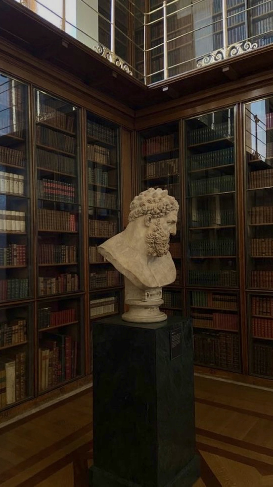

Οι υπηρεσίες του γραφείου μας εκτείνονται σε όλο το φάσμα του Αστικού Δικαίου, παρέχοντας υπεύθυνα νομική κάλυψη για τους όλους τους τομείς που το απαρτίζουν. Πιο συγκεκριμένα, το δικηγορικό γραφείο Παρασκευά Κ. Γεωργίου και συνεργατών, αναλαμβάνει υποθέσεις:
Οι Συνεργάτες του γραφείου μας διαθέτουν σημαντική εμπειρία σε όλες τις εκφάνσεις του κληρονομικού δικαίου, τόσο εξωδίκως όσο και δικαστικώς.
Ειδικότερα, παρέχουμε ολοκληρωμένες νομικές συμβουλές σε ζητήματα αποδοχών (με το ευεργέτημα της απογραφής ή χωρίς) και αποποιήσεων κληρονομιών, ενόψει και της υφιστάμενης οικονομικής κρίσης, ενώ προβαίνουμε σε απαραίτητες ενέργειες, προκειμένου να συντελεστεί η επαγωγή της κληρονομιάςστον κληρονόμο, όπως την έκδοση πιστοποιητικών σχετικά με τις διαθήκες, την έκδοση κληρονομητηρίου, την δημοσίευση διαθηκών και την κύρηξή τους ως κυρίων, καθώς και την δήλωση αποδοχής κληρονομιάς.
Περαιτέρω, το Γραφείο μας έχει συμμετάσχει σε σημαντικές δίκες που αφορούν κληρονομιαίες περιουσίες μεγάλης αξίας, αντιμετωπίζοντας περιπτώσεις πλαστών διαθηκών, μέμψεις άστοργης δωρεάς, αγωγές κληρονομικής περιουσίας και απόδοση νόμιμης μοίρας.
Το Γραφείο μας έχει συμμετάσχει σε σημαντικές δίκες που αφορούν κληρονομιαίες περιουσίες μεγάλης αξίας, αντιμετωπίζοντας περιπτώσεις πλαστών διαθηκών, μέμψεις άστοργης δωρεάς, αγωγές κληρονομικής περιουσίας και απόδοση νόμιμης μοίρας.
Με γνώμονα την ταχύτερη και πληρέστερη διασφάλιση των συμφερόντων των εντολέων μας παρέχουμε νομικές υπηρεσίες σε ένα ευρύ φάσμα υποθέσεων που σχετίζονται με το εμπράγματο δίκαιο. Ειδικότερα, παρέχουμε νομική προστασία με αξιοπιστία και συνέπεια σε περιπτώσεις όπως:
Δεδομένων των διαρκώς μεταβαλλόμενων συνθηκών και αναγκών των μισθωτών, είτε πρόκειται για φυσικά πρόσωπα είτε για επαγγελματίες, το Δικηγορικό μας γραφείο έχει χειριστεί με επιτυχία μεγάλο όγκο υποθέσεων που σχετίζονται με μισθωτικές διαφορές, όπως αγωγές μείωσης μισθώματος, αγωγές απόδοσης μισθίου, επαγγελματικές μισθώσεις και μισθώσεις αγροκτημάτων, καταγγελίες μισθώσεων, αγωγές καταβολής μισθωμάτων, αποζημίωση.
Οι δικηγόροι του γραφείου μας είναι σε θέση να σας συμβουλεύσουν και να σας παράσχουν, υπεύθυνα και αποτελεσματικά, νομική κάλυψη σε ζητήματα του ενοχικού δικαίου.
Ενδεικτικά:
Οι έμπειροι και εξειδικευμένοι συνεργάτες μας έχουν επανειλημμένα χειριστεί με επιτυχία αγωγές αποζημίωσης λόγω αδικοπραξίας σε περιπτώσεις δυσφημιστικών διαδόσεων, σε περιπτώσεις βλάβης του σώματος ή της υγείας για την καταβολή νοσηλείων και αποζημίωσης όπως επίσης και αποζημιώσεις σε περιπτώσεις παράνομης αφαίρεσης ή βλάβης πράγματος. Τέλος, το Δικηγορικό μας γραφείο αναλαμβάνει μεγάλο όγκο υποθέσεων αγωγών αποζημίωσης λόγω προσβολής προσωπικότητας φυσικού προσώπου ή προσβολή φήμης νομικού προσώπου, επιτυγχάνοντας με την αξιοποίηση όλων των διαθέσιμων νομικών και δικονομικών εργαλείων την πληρέστερη και πιο ολοκληρωμένη προστασία των εντολέων μας από πάσης φύσεως προσβολές του ύψιστου έννομου αγαθού της προσωπικότητας.
Το γραφείο εξειδικεύεται σε υποθέσεις ποινικού δικαίου και παρέχει απόλυτη νομική στήριξη σε όλα τα στάδια της ποινικής διαδικασίας. Αναλαμβάνουμε τη σύνταξη μηνύσεων και υπομνημάτων και την εκπροσώπηση των πελατών μας σε προανακριτικές και ανακριτικές πράξεις.
Είμαστε εξειδικευμένοι στο χειρισμό υποθέσεων που αφορούν φορολογικά αδικήματα, εγκλήματα σχετικά με το νόμισμα, εργατικά και τροχαία ατυχήματα, ναρκωτικά, εγκλήματα κατά της ζωής, της ανθρώπινης αξιοπρέπειας και της γενετήσιας ελευθερίας, εγκλήματα κατά της ιδιοκτησίας, υποθέσεις ακάλυπτων επιταγών χρέη προς το Δημόσιο και τους κοινωνικο-ασφαλιστικούς φορείς, ενώ ταυτοχρόνως αναλαμβάνουμε υποθέσεις που σχετίζονται με το ηλεκτρονικό έγκλημα καθώς επίσης και υποθέσεις που πηγάζουν από παραβίαση των προσωπικών δεδομένων του ατόμου. Συμβουλεύουμε και εκπροσωπούμε τους πελάτες μας σε υποθέσεις οικονομικών εγκλημάτων, προσφέροντας τους εξειδικευμένες συμβουλές τόσο στο στάδιο της προπαρασκευαστικής διαδικασίας όσο και στο ακροατήριο. Είναι εξαιρετικά σημαντικό να καταστεί αντιληπτό ότι η ανάθεση και διεργασία της υπόθεσης σε πρώιμο στάδιο διασφαλίζει τη μεγαλύτερη πιθανότητα του επιθυμητού αποτελέσματος. Τέλος, όλοι γνωρίζουν ότι η ποινική δίωξη άπτεται ευαίσθητων προσωπικών δεδομένων και το δικηγορικό μας γραφείο διασφαλίζει ότι αυτά τυγχάνουν εμπιστευτικής αντιμετώπισης.
Οι δικηγόροι του γραφείου μας έχουν ιδιαίτερη εξειδίκευση στο Οικονομικό και Φορολογικό Ποινικό Δίκαιο, η οποία καλύπτει τον χειρισμό υποθέσεων με αντικείμενο οικονομικά εγκλήματα.
Ιδιαίτερης μνείας χρήζει η συχνή ενασχόληση με υποθέσεις φορολογίας και νομιμοποίησης εσόδων από εγκληματικές δραστηριότητες, άλλως ξέπλυμα βρώμικου χρήματος, ενώπιον του ΚΕ.ΦΟ.ΜΕ.Π, της αρμοδίας Αρχής για την Καταπολέμηση της Νομιμοποίησης Εσόδων από Εγκληματικές Δραστηριότητες, του ΣΔΟΕ, και των λοιπών εμπλεκομένων δημοσίων υπηρεσιών αλλά και των αρμοδίων ανακριτικών και εισαγγελικών αρχών και δικαστηρίων.
Οι έννομες σχέσεις μεταξύ κράτους και ιδιωτών αποτελεί ένα πεδίο διακριτής νομικής σημασίας, το οποίο δεν εκφεύγει του γνωστικού αντικειμένου του γραφείου μας δεδομένου ότι βασικός μας σκοπός είναι η κάλυψη των αναγκών των εντολέων μας.
Θεμελιώδης αρχή του γραφείου μας είναι ότι ο ρόλος του Δικηγόρου είναι προτιμότερο να έχει προληπτικό παρά κατασταλτικό χαρακτήρα. Στα πλαίσια αυτά, η γνώση και η διαρκής παρακολούθηση της νομοθεσίας αποτελεί τον καλύτερο τρόπο προστασίας των συμφερόντων των εντολέων μας. Στο χώρο του Φορολογικού Δικαίου, η ανάκγη αυτή είναι ακόμα πιο επιτακτική, ειδικά από τη στιγμή που η επίδραση των κανόνων του.
Στον τομέα της φορολογικής νομοθεσίας πρωταρχική μας μέριμνα αποτελεί η περιβολή των πελατών μας από ένα οργανωμένο πλαίσιο συμβουλευτικής διαχείρισης με απώτερο σκοπό τις νομικά προβλεπόμενες εξασφαλίσεις φορολογικών πλεονεκτημάτων και την αποφυγή της εμπλοκής τους σε δικαστικούς αγώνες έναντι των Φορολογικών Αρχών.
Οι παρεχόμενες υπηρεσίες μας καλύπτουν όλο το εύρος των ζητημάτων που άπτονται του φορολογικού δικαίου όπως φόρος εισοδήματος, φορολογία που αφορά στην αύξηση κεφαλαίου από τη χορήγηση μετοχών, φοροαπαλλαγές σε σχέση με τις μισθολογικές παροχές, φορολογία δωρεών, γονικών παροχών και κληρονομιών καθώς και φορολογία σε σχέση με τους ισχύοντες ειδικούς φόρους κατανάλωσης.
Περαιτέρω το γραφείο μας προσφέρει τις υπηρεσίες του σε περίπτωση επιβολής προστίμων ή φόρων και επιλαμβάνεται της άσκησης ενδικοφανών προσφυγών ή προσφυγών ενώπιον των αρμοδίων Δικαστηρίων καθώς και αναστολών είσπραξης με σκοπό την προστασία των περιουσιακών στοιχείων των πελατών μας.
Το εμπορικό δίκαιο αποτελεί ειδικό κλάδο του ιδιωτικού δικαίου και έχει ως αντικείμενο τη ρύθμιση του εμπορίου. Περιλαμβάνει τους κανόνες του δικαίου οι οποίοι σχετίζονται με τις εμπορικές πράξεις και τους εμπόρους. Αποτελεί το σύνολο των κανόνων, διατάξεων και αρχών, με τους οποίους ρυθμίζονται οι νομικές πτυχές των εμπορικών σχέσεων και ανταλλαγών. Το εμπορικό δίκαιο εκτείνεται σε ζητήματα όπως είναι τα δικαιώματα βιομηχανικής ιδιοκτησίας, ο ανταγωνισμός, οι εμπορικές εταιρίες, η πτώχευση, τα αξιόγραφα, το χρηματιστήριο, οι τράπεζες, οι εμπορικές συμβάσεις κλπ. Ειδικότερα, το εμπορικό δίκαιο υποδιαιρείται:
Αξίζει να σημειωθεί ότι το γραφείο μας παρέχει εξειδικευμένες υπηρεσίες στο δίκαιο των επιχειρήσεων (Business Law). Σας εγγυόμαστε τη συστηματική ενασχόληση μας με την υπόθεση εμπορικού δικαίου σε όλες τις εκφάνσεις του (ίδρυση εταιρειών, κατοχύρωση εμπορικών σημάτων, ζητήματα πνευματικής και βιομηχανικής ιδιοκτησίας, θέματα ανταγωνισμού, εμπορικές συμβάσεις), καθώς και την νομικής σας προστασία κατά το σημαντικό στάδιο των εμπορικών διαπραγματεύσεων.
Το δικηγορικό μας γραφείο μας προσφέρει πλήρη και πολύπλευρη νομική κάλυψη με άμεση και μεθοδευμένη αντιμετώπιση των ζητημάτων που μπορούν να προκύψουν: Ασφαλιστικά μέτρα επιμέλειας, διατροφής, μετοίκησης, τακτικές αγωγές επιμέλειας, διατροφής. διαζύγια με αντιδικία, λόγω διάστασης, συναινετικά, αγωγές για την διεκδίκηση των αποκτημάτων κατά τη διάρκεια του γάμου, αγωγές αναγνώρισης ή προσβολής πατρότητας.
Το δικηγορικό μας γραφείο μέσα από μια ομάδα έμπειρων και εξειδικευμένων συνεργατών είναι σε θέση να χειριστεί ένα ευρύ φάσμα νομικών υποθέσεων του οικογενειακού δικαίου: γάμοι (γαμικές - οικογενειακές διαφορές), σχέσεις των συζύγων από το γάμο (συμβίωση, οικογενειακή στέγη, περιουσιακή αυτοτέλεια, αξίωση συμμετοχής στα αποκτήματα), διαζύγια (συναινετικά ή με αντιδικία), διατροφές (διατροφή μεταξύ των συζύγων, διατροφή τέκνων), σχέσεις γονέων και τέκνων (γονική μέριμνα, επιμέλεια τέκνων, επικοινωνία γονέων με τα τέκνα), υιοθεσίες (ανηλίκων και ενηλίκων), επιτροπεία ανηλίκου, αναδοχή ανηλίκου, δικαστική συμπαράσταση, διοίκηση αλλότριων.
Στη χώρα μας τα τελευταία χρόνια, ιδίως μετά το 1995, λόγω της μαζικής προσέλευσης αλλοδαπών, αναπτύχθηκε το δίκαιο των αλλοδαπών το οποίο έχει αποτελέσει αντικείμενο επιστημονικής εξειδίκευσης. Σχετική είναι η και η δραστηριότητα στον τομέα αυτό του Έλληνα νομοθέτη ο οποίος με αλλεπάλληλα νομοθετήματα προσπάθησε να ρυθμίσει τα σχετικά προβλήματα.
Το γραφείο είναι εξειδικευμένο στο χειρισμό υποθέσεων δικαίου αλλοδαπών και παρέχει απόλυτη νομική στήριξη στη διαδικασία χορήγησης αδειών παραμονής σε πολίτες τρίτων χωρών, χορήγηση αδειών για ανθρωπιστικούς λόγους, για εξαιρετικούς λόγους, για οικογενειακή επανένωση, για αιτούντες πολιτικού ασύλου, για μετακλήσεις, για χορήγηση εθνικών θεωρήσεων εισόδου καθώς και για όλες τις διαδικασίες διαγραφής από τον Εθνικό Κατάλογο Ανεπιθύμητων Αλλοδαπών.
Οι εφαρμοστέος κανόνας δικαίου σε ισχύ στην Ελληνική Επικράτεια είναι ο " Κώδικας μετανάστευσης και Κοινωνικής Ένταξης και λοιπές διατάξεις"
I) Χορήγηση άδειας παραμονής σε αλλοδαπούς για εξαιρετικούς λόγους
II) Χορήγηση άδειας παραμονής σε αλλοδαπούς για ανθρωπιστικούς λόγους
III) Χορήγηση άδειας παραμονής σε δικαιούχους διεθνούς προστασίας -αιτούντες άσυλο-επικουρική προστασία-προσωρινή προστασία.
IV) Χορήγηση άδειας διαμονής για οικογενειακή επανένωση πολίτη τρίτης χώρας
V) Χορήγηση αδειών διαμονής στη δεύτερη γενιά μεταναστών
VI) Χορήγηση άδειας διαμονής για εξαρτημένη εργασία -μετάκληση
VII) Διαδικασίες διαγραφής από τον εθνικό κατάλογο ανεπιθύμητων αλλοδαπών
Για την χορήγηση οποιασδήποτε άδειας διαμονής σε πολίτη τρίτης χώρας στην Ελληνική Επικράτεια μία εκ των βασικών προϋποθέσεων είναι η μη πρότερη εγγραφή αυτού στον Εθνικό Κατάλογο Ανεπιθύμητων Αλλοδαπών. Εάν ο πολίτης τρίτης χώρας είναι εγγεγραμμένος στον Ε.ΚΑ.ΑΝ.Α. πρέπει να τηρηθεί η διαδικασία διαγραφής αυτού πριν την υποβολή αίτησης για χορήγηση άδειας διαμονής.